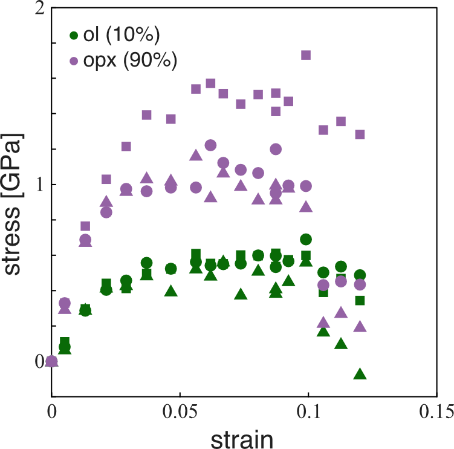
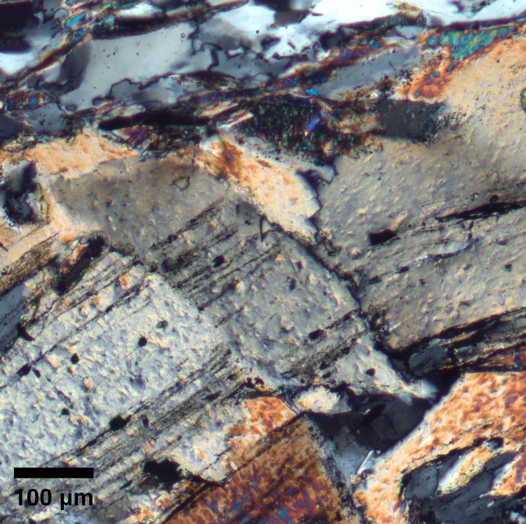
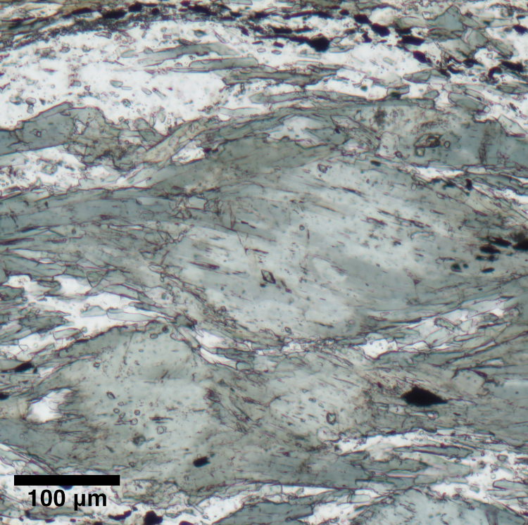
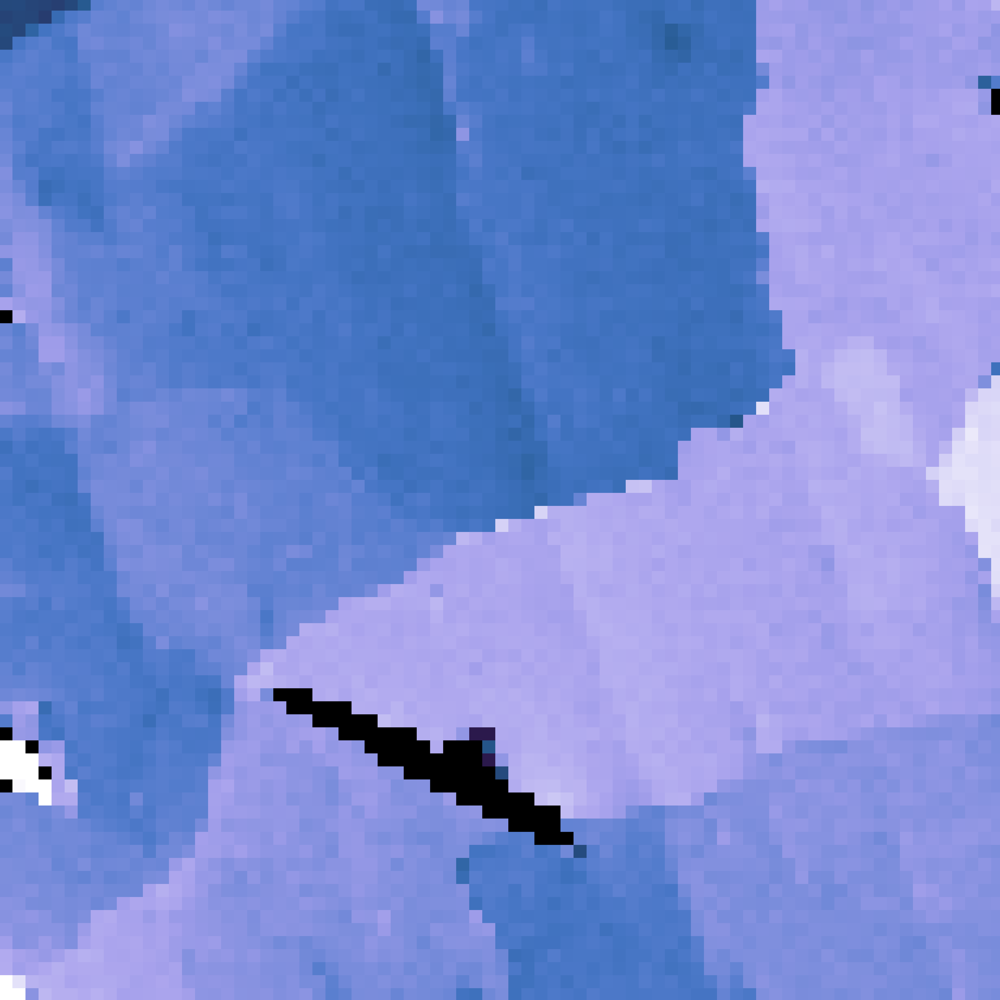
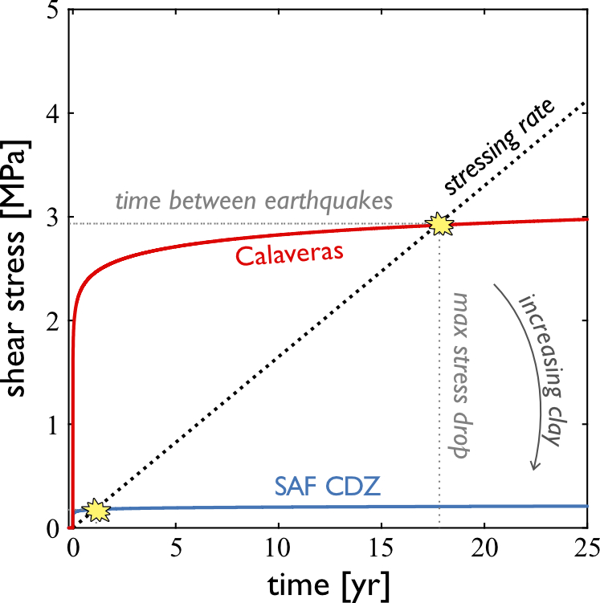

research projects
 |
Stress partitioning in polymineralic rocksMost flow laws are fit to individual minerals, but natural shear zones contain polymineralic rocks. Mixing laws combine flow laws to estimate bulk rock strength, but recent experiments show that two-phase mixtures do not behave as a simple spectrum between their end-members. High-pressure, high-temperature experiments in a Deformation-DIA measure in situ stresses in olivine-orthopyroxene mixtures to test how stress partitions with changing composition and viscosity contrast. |
 |
Biotite deformation and recovery mechanismsMicas like biotite are an ubiquitous mineral in faults and shear zones and are often invoked to explain the weakness of the crust. High-pressure experiments in a Deformation-DIA test the contributions of different possible deformation mechanisms, and high-temperature torsion experiments in a Paterson apparatus observe deformation and recovery with increasing strain. |
|
  |
Amphibole deformation in subduction zones and lower crustAmphibole is a key mineral in rocks along the subduction interface and in the hydrated lower crust. Field work on paleosubduction interface shear zones and sheared amphibolite dykes in the lower crust investigates how deformation is accommodated in nature. Microstructural analysis using conventional and HR-EBSD probes the potential for dislocation-mediated deformation, while chemical mapping looks for diffusion-mediated microstructures. High-temperature, high-pressure deformation experiments measure the strength and evaluate the operating deformation mechanisms in amphibole-bearing rocks. Nanoindentation experiments confirm the applicability of the backstress model to sodic amphibole and epidote, and Deformation-DIA experiments constrain a flow law for low-temperature plasticity in blueschist. Deformation experiments in a Griggs apparatus on basalt with added water determines the relationship between amphibole-forming hydration reactions and strength. |
 |
Frictional healing of fault gougesFrictional healing is a fundamental process in the seismic cycle that allows faults to recover their strength between earthquakes. Experiments conducted on synthetic gouges measured the impact of clay minerals on healing rates and found that healing decreases with increasing clay content. This small healing, together with low strength and a tendency toward stable behavior, may promote small frequent earthquakes—or inhibit earthquakes—on faults.Find out more in Seyler et al. (2023) GRL. |